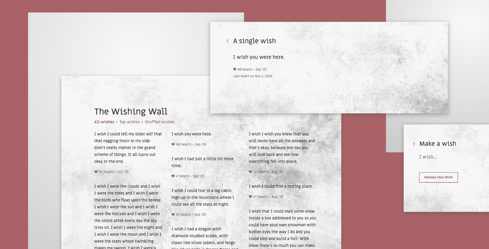

The Wishing Wall
Project Description
I firmly believe that great designers are masters of their mediums and the Wishing Wall was a fun, low-stakes way for me to dig deeper into the medium of software. As simple as it was, this app gave me invaluable first-hand experience with front-end development using React.
App Features
I created a Wishing Wall where people can anonymously post a wish and interact with other people’s wishes. This simple app allows users to:
- See people’s wishes
- Sort wishes by date added or top liked
- Shuffle wishes to see what strikes you
- Post your own wish
- Like wishes that call out to you
App Code
Since this was my first project using React, I was mostly trying to learn the basics of React structures with components, state, props and all that good stuff. After creating the basic outline for my app, I ran into challenges with my project that called me to look to external libraries for specific solutions:
- React Router
Since I wanted a seamless way to navigate through the app, I implemented React Router to manage content transitions. - Redux
To manage state globally, I looked to Redux to create a scalable framework for loading, storing, and changing data. - Redux-Thunk
I used Thunk as a middleware platform to manage actions going into the Redux store.
See my full code on github.
Product Preview
Check it out the in-progress version of the Wishing Wall in the playground below, or in its full glory here.
Note #1: At the moment I’ve only built the front-end, so no information is
saved
once the page is refreshed. Think of it as a fresh start...
Lessons Learned
This simple app let me flex my JavaScript muscles through React, seeing an actual product come to life! It helps me appreciate the work that goes into coding the designs I create, both from a technical and experiential perspective.
On the technical side, I learned a lot about the React library and some common integrations. I built components, passed down props, and set up a Redux store to enable scalable app interactivity. Though I know I’ve just skimmed the surface, I built up a foundation I can easily build off of as I start to build more complicated apps.
And on the experience side, it was quite the ride. I got a taste of some development pains, from setting up the project to thinking through logic flows to refactoring over and over again. And of course debugging, oh the profound pain of debugging!!!
But boy was it satisfying being able to see my app working and know I built it all myself. (With the help of many, many people contributing to open source code, of course.) Creating something with actual functionality is quite the rush, and indeed rather addicting!
My next step is to integrate with a back-end database so the Wishing Wall can truly come to life. Stay tuned!